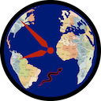

A small PHP library that turns longitude and latitude into an IANA time zone name, such as America/New_York. Use it in your application through Composer, or run it as a simple HTTP service.
Requires PHP 8.0+, PDO, and MySQL or PostgreSQL with a loaded boundary database. Boundary data comes from the Timezone Boundary Builder project.
Unfortunately, time zones are not a simple "I'm at this longitude, so it must be this time." They are political constructs.
Here's why we can't just do a simple longitude match:
Image Source: Wikimedia Commons
We address this by using the rendered result of this great project, which is an effort to build a "living document" map of all the world timezones, as a shapefile (a file that can project polygons over a digital map), and locating a geographic point, within those shapes.
Run these commands in your application's directory:
Then look up a location:
Pass longitude first, then latitude, in degrees. The result is a time zone name, or an empty string if no match is found. You can reuse the lookup object for multiple locations.
For PostgreSQL, use pgsql instead of mysql. Ports default to 3306 and 5432, respectively; an optional sixth constructor argument selects another port. Install the PDO extension for your chosen database.
Populate the timezones table once before making lookups, or import it from an existing installation. The initial loading instructions show how to load the downloaded GeoJSON file into your database. Lookup needs only SELECT access afterward.
The streaming JSON parser is an optional dependency used only for loading. The boundary file is downloaded separately and is not bundled with the library.
To run an HTTP service, start the installer from a checkout:
It asks for database and server settings, downloads and loads the latest boundaries, tests the lookups, and installs the endpoint. A random server secret is enabled by default. The final output gives you the secret and a request URL, such as:
Use ./deploy.sh --no-secret for public access. You need an existing PHP-enabled web server and database service. See the deployment guide for prerequisites, directory choices, and recovery.
Version 1.4.1 adds a simple updater. From a checkout:
Use the same private configuration as your server. New server deployments include update.sh beside config.php, so the installed script can run without a path argument.
The updater reports the boundary version and polygon count, and deletes the downloaded ZIP and GeoJSON afterward. It loads the new data before replacing the live table, so a failed load retains your existing boundaries. Each update command reloads the latest release; --check lets you decide whether to run it.
See the updater guide for requirements, options, and cleanup recovery.
From a checkout, with PHP and a running MySQL or PostgreSQL server:
The demo installs the library, downloads boundaries, creates a temporary database, and runs the lookup tests. It removes that database and its downloads afterward. See demo setup and options, including how to test a local checkout or select PostgreSQL.
For development, run composer install and composer test in the repository root. Rebuild the HTML documentation with ./generate-docs.sh; build instructions cover prerequisites and previewing.
MIT, © Little Green Viper Software Development LLC.